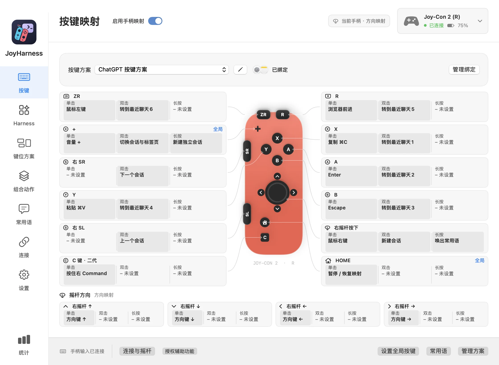
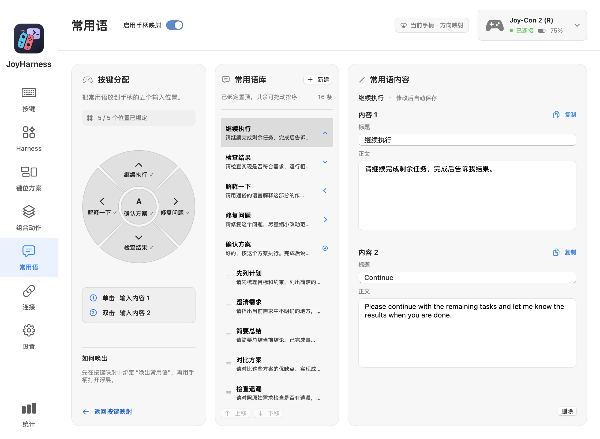
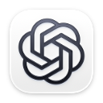
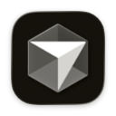
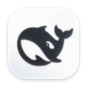
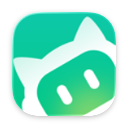
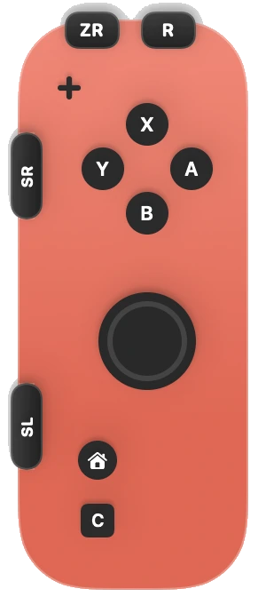
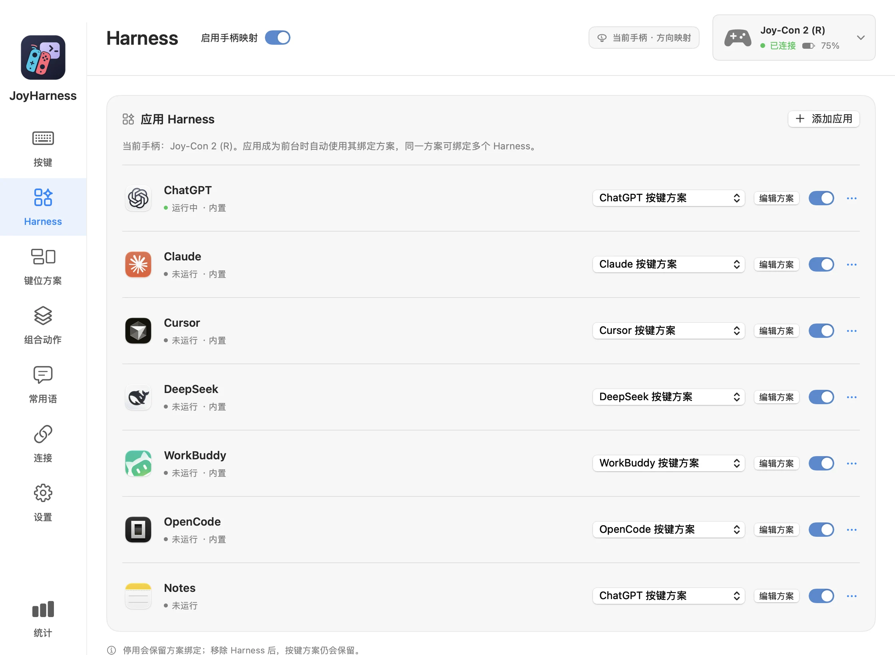
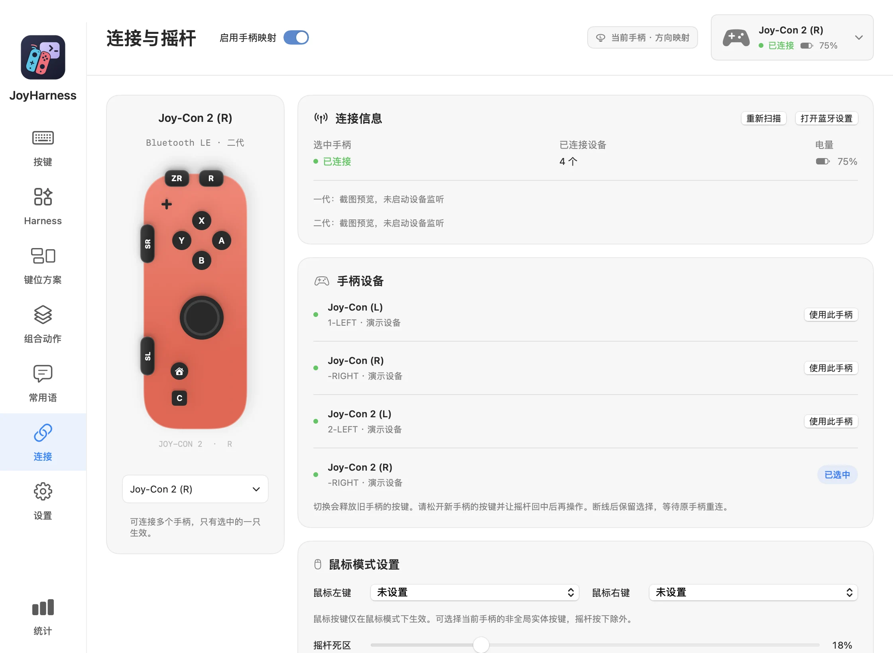

01 / 摇杆控制
用摇杆，接管鼠标
在方向映射与鼠标模式之间切换。校准摇杆中心，调节死区和速度，再选择顺手的鼠标左右键。


常用的表达，放在手边
实际软件界面 按键、方案和应用，一一对应

ChatGPTClaude
Cursor
DeepSeek
WorkBuddyOpenCode从手柄到桌面
把快捷键、鼠标和常用语放到手柄上。
每个应用使用你为它准备的方案。
在方向映射与鼠标模式之间切换。校准摇杆中心，调节死区和速度，再选择顺手的鼠标左右键。
为普通按键分别配置单击、双击与长按。快捷键、鼠标操作、系统动作、常用语都可以按习惯安排。
为内置或自行添加的应用绑定方案，随前台应用自动切换。同一方案也能由多个应用共享。
按顺序组合本机动作与等待时间，再绑定到按键。常用语也能作为组合动作中的一步。
05 / 常用语
保存常用表达，再用手柄唤出常用语。每条可编辑两组内容，单击输入内容 1，双击输入内容 2。
内置 16 条可编辑的中英文提示语，覆盖继续执行、解释、检查与修复等场景。
了解如何配置请继续完成剩余任务，完成后告诉我结果。
在软件中唤出浮层后，输入到当前文本框Joy-Con 与 Joy-Con 2
两代 Joy-Con 的左右手柄都可以独立连接。
连接多只手柄时，可以在应用中选择当前手柄。
一代在 macOS 蓝牙设置配对，二代在 JoyHarness 内扫描连接。查看连接方法 ↗

真实软件界面
按键映射、应用方案、组合动作、常用语与摇杆设置。
支持深浅色外观，关闭窗口后仍可从菜单栏使用。
为当前手柄配置单击、双击和长按
JoyHarness · 实际产品界面应用 Harness
在「Harness」中给应用绑定键位方案。切到 ChatGPT 时用手柄发送消息，切到 Cursor 后用同一只手柄执行编辑操作。
了解 Harness 与按键方案
首次使用
把 JoyHarness 拖入「应用程序」。打开后授予权限，再按手柄型号完成连接。
一代 Joy-Con 先在 macOS 中配对。Joy-Con 2 直接在「连接与摇杆」中扫描。
可以从菜单栏重开面板、暂停映射或重新扫描手柄。

打开 DMG，把应用拖到「应用程序」。在 JoyHarness 设置中授予辅助功能权限。
下载安装 · 系统权限长按手柄侧面的 SYNC 键，按型号完成配对。在应用顶部菜单选择要用的手柄。
蓝牙配对 · 手柄选择打开「按键映射」，试按方向键或 A 键，再按习惯调整手势与应用方案。
默认键位 · 应用绑定本地配置与使用统计
JoyHarness 的配置与常用语保存在本机。
使用统计在本机记录按键与动作次数。
可在设置中将配置导出为 JSON。导入前可预览，确认后替换现有配置。
下载 DMG 后将应用拖入「应用程序」，授予权限，然后按手柄型号连接。查看安装说明。
需要 Apple Silicon Mac 和 macOS 15 或更新版本。支持 Joy-Con 与 Joy-Con 2 的左右手柄。实体设备的兼容性仍待完整验证。查看连接说明。
确认顶部已选中当前手柄、已开启手柄映射并已授予辅助功能权限。一代还需要输入监控权限。
可以把 C 键绑定到语音工具的快捷键，由该工具使用 Mac 或外接麦克风收音。
可以。在 Harness 页面将多个应用绑定到同一套键位方案。切换到已绑定的前台应用时，JoyHarness 会加载相应方案。
可以。在「设置」中检查更新，也可开启自动检查。下载后由你确认并重启安装。
可以。只有选中的一只会触发映射。通过顶部设备菜单、连接与摇杆页面或菜单栏切换。
每条常用语可以编辑两组标题和正文。打开常用语浮层后，单击输入内容 1，双击输入内容 2。查看配置步骤。